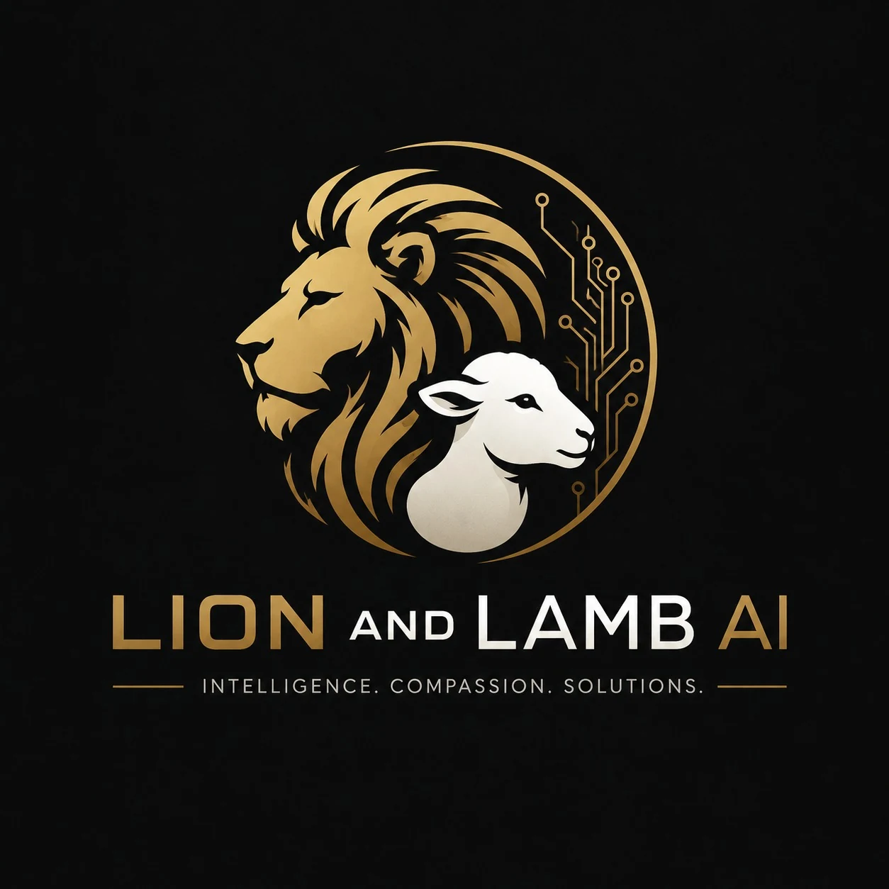

Our brand promise
Helping Small Businesses Buy Back Their Time.
We remove repetitive work so business owners and their teams can spend more time serving customers, building relationships and moving the business forward.
About us
We believe AI should help people do better work—not make people feel replaceable, confused or left behind.
Our brand promise
We remove repetitive work so business owners and their teams can spend more time serving customers, building relationships and moving the business forward.
Our philosophy
Technology should support the people in a business—not push them aside. We automate what drains time while keeping trust, judgement and human connection where they belong.
Our values
These values guide what we build, what we recommend and the way we work with every client.
Every decision starts with what’s best for our clients.
Honest advice. Transparent pricing. No unnecessary solutions.
Helping businesses make the best use of their time and resources.
Thoughtfully designed systems that are reliable and effective.
We’re invested in your success, not just your next project.
We strive to honour God by serving people with integrity, humility, and excellence.

Meet the founder
I founded Lion and Lamb AI because I believe business owners should spend less time on repetitive admin and more time doing what they do best—serving their customers and growing their business.
Our mission is simple: to build practical AI solutions that save time, improve customer experiences, and help businesses operate more efficiently.
As a Christian, my faith shapes the way I do business. The name Lion and Lamb AI reflects the qualities I strive to bring to every client relationship—strength with humility, wisdom with compassion, and leadership through service. Whether you share my faith or not, you can expect honesty, integrity, and a genuine commitment to helping your business succeed.
My approach is guided by four principles
Every business is different, which is why I take the time to understand your challenges before recommending a solution. My goal isn’t to sell software—it’s to become a trusted long-term partner who helps your business thrive.
Start a conversation →Why Lion and Lamb?
At Lion and Lamb AI, we believe AI isn’t about replacing people. It’s about giving business owners and their teams more time to focus on what matters most: serving customers, building relationships, and growing their business.
We don’t believe in selling complicated technology or solutions you don’t need. Every recommendation we make is guided by honesty, integrity, and a genuine desire to solve real business problems.
The name Lion and Lamb reflects who we are.

The confidence to help businesses embrace new technology.
The way we believe every client should be treated.
Together, they remind us that great businesses are built on both strength and service.